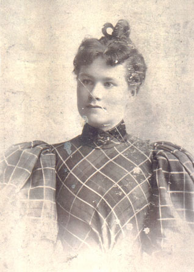
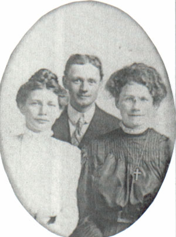

Anna Burns Leary
1874 - 1931
Anna Burns was born in 1874 to Irish immigrants Catherine and Michael Burns. She married a man with the last name Leary and had at least one son, Andrew.

A portrait of Anna.

Andrew's wife, Andrew (Anna's son), Anna
She died in 1931.
Parents:
Catherine Esther Higgins
1859 - 1943
Michael Burns
1852 - 1910
Offspring:
Andrew Leary
Others?
References:
1. Virginia Craig
Last Modified: 12 May 2004 by
Brad Wogsland
.